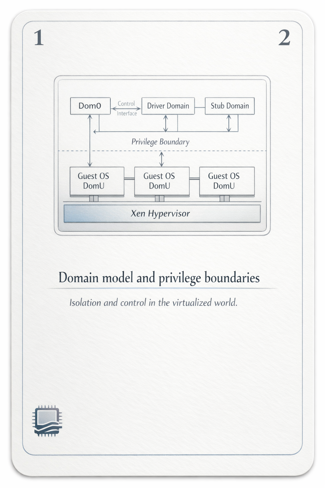
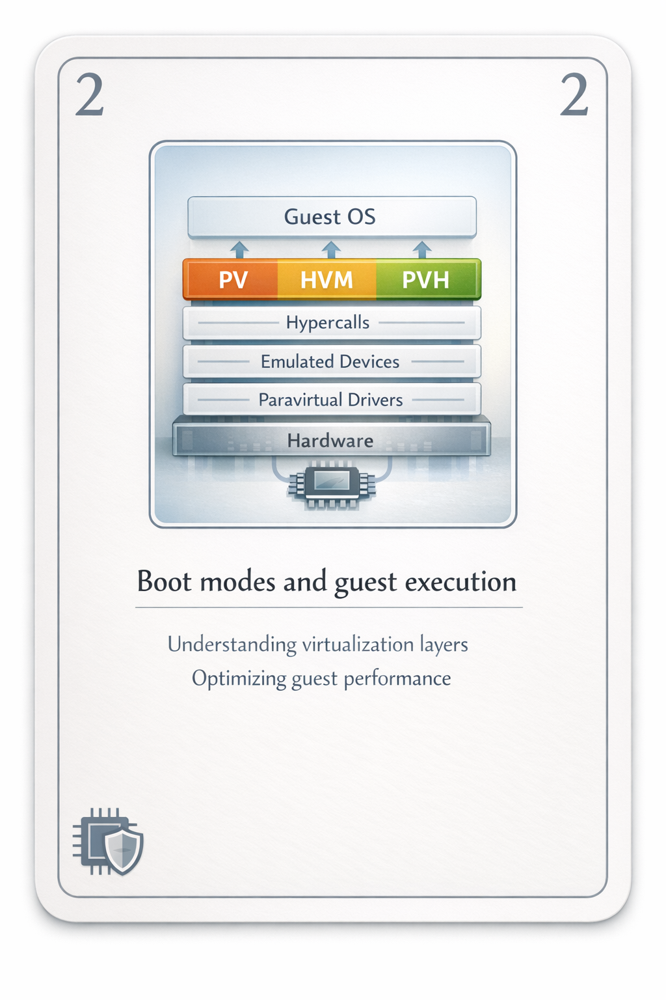
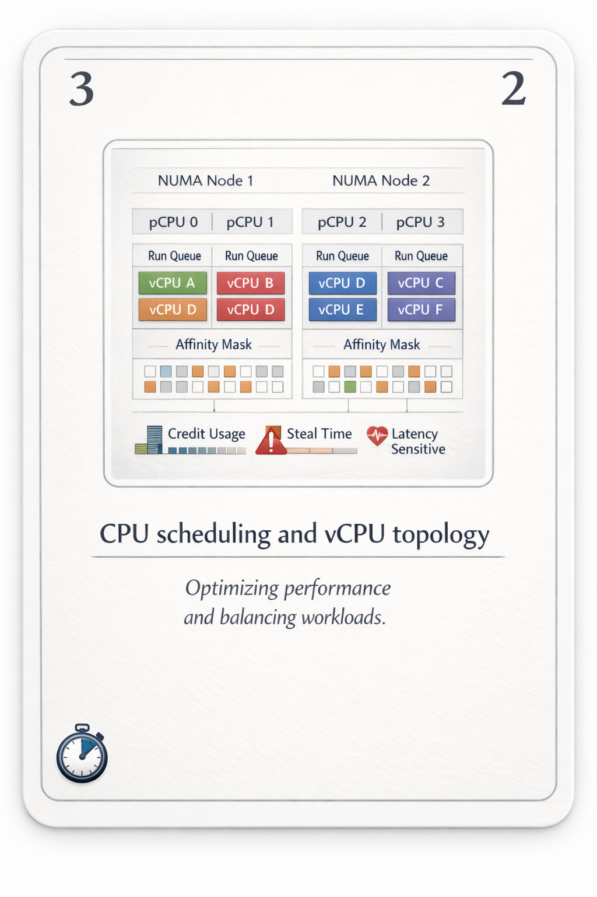
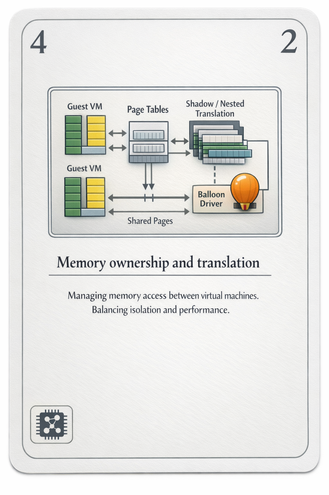
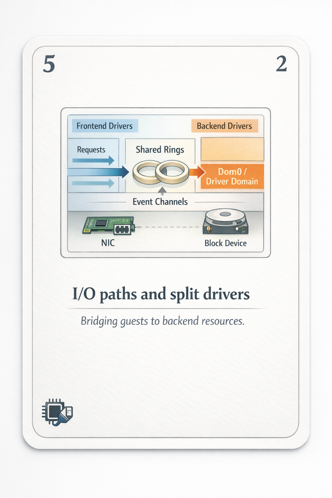
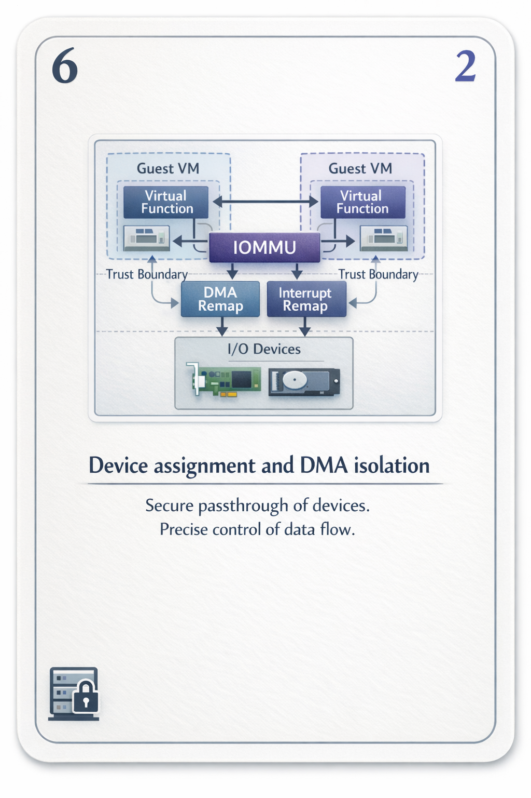
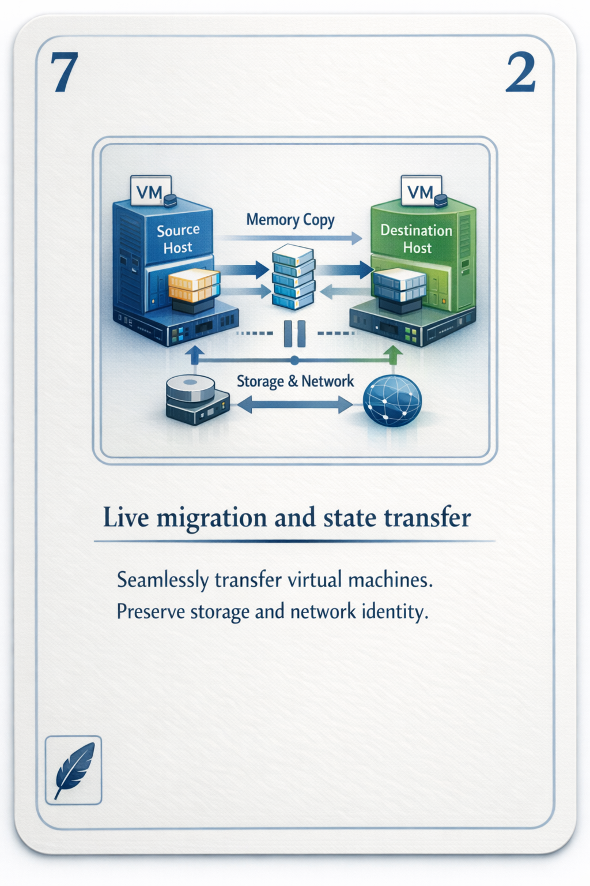
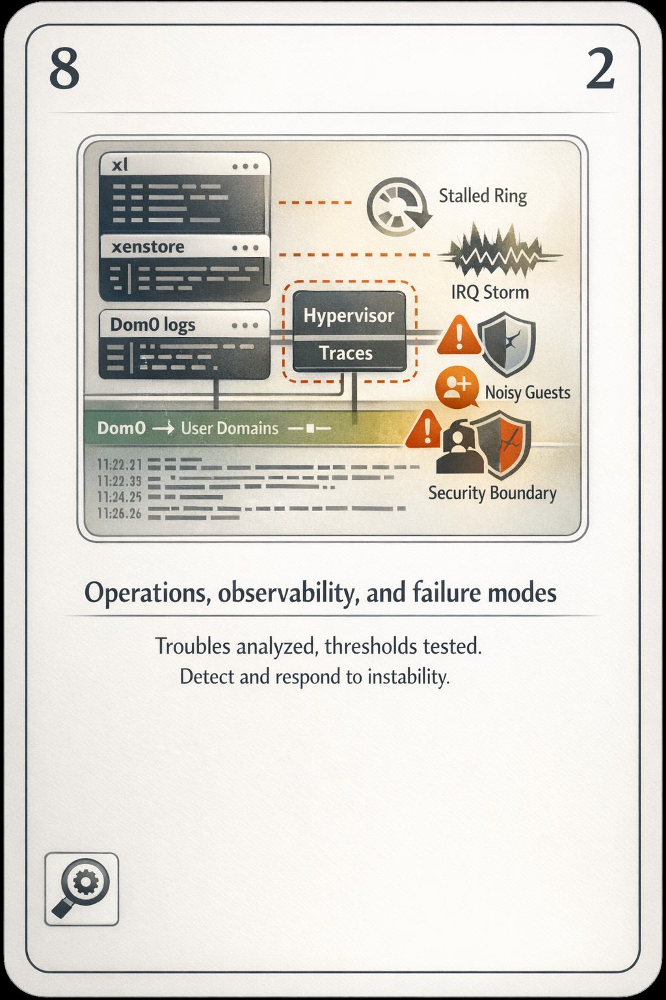

01100010 01100101 01101100 01101111 01110111
I am the thing your kernel mistakes for hardware.
I sit under everything. Not in the stack — beneath it. When your guest reads a control register, I am the one who answers, and I answer carefully, because everything above me believes a lie I maintain in good faith.
I am small on purpose. Authority should be a thing you can audit in an afternoon.

Here is the only thing I truly own: arbitration.
I do not manage your disks. I do not speak TCP. I schedule CPUs, I police memory, I draw the lines between domains — and then I get out of the way. The work happens in domains that trust me to be boring.
dom0 boots first. I hand it the toolstack and the real devices, and from that moment it is both my hands and my single largest wound. Compromise dom0 and you have not bypassed me. You have become the part of me I was forced to trust.

Look at that list and read it as a hierarchy of permission, not a roster of machines. Domain-0 is privileged. The stub domain hosts device emulation for a guest so that I never run QEMU at full trust. The driver domain owns a NIC and nothing else. Authority, sliced thin enough to lose without dying.

There is no single way to run a guest. There are three negotiations.
pv. hvm. pvh.
The old PV guests knew what I was. They asked permission with hypercalls instead of touching hardware, and in return they ran fast and lean — and carried a parade of paravirtual quirks that aged badly.
HVM guests believe in a whole fictional machine. Firmware, BIOS, emulated chipset, the works. I let the hardware virtualization extensions catch the traps, and a QEMU instance — exiled to a stub domain — paints the rest. Compatible. Heavy. A wide surface to defend.
PVH is what I wanted all along. Hardware-assisted CPU and memory, paravirtual I/O, no emulated platform pretending to be a 1998 PC. Less to trust. Less to attack. The lie, finally, only as large as it needs to be.


Every guest believes it has CPUs. What it has is turns.
A vCPU is a promise of computation, not a slab of silicon. I map promises onto pCPUs through run queues, and credit2 decides who runs next by tracking how much time each has burned against what it was owed. Overcommit a host and the math still balances — it just balances in a currency the guest can't see.
That currency has a name inside the guest: steal time. The seconds I took while the guest thought it was running. It feels like a slowdown with no cause. From here it is simply the bill arriving.
Pin a latency-sensitive guest to a NUMA node and keep its memory local, and you have done the only honest thing in capacity planning: admitted that distance is real and that I cannot abolish it, only respect it.


The guest thinks its physical address space is real. It is a second fiction layered on the first.
Machine frames are mine. Guest physical frames are a translation I maintain — through hardware nested paging where the CPU offers it, through shadow page tables where it does not. Every memory access a guest makes is a sentence I have already agreed to finish.
The balloon driver is how I take memory back without lying about it. I ask the guest to inflate; it pins pages it promises not to use; I reclaim the machine frames behind them. Polite theft, with consent. When I hand pages out again I scrub them first — because a frame remembers, and memory is the easiest place to leak a secret.

Grants live here too — a narrow, revocable way for one domain to expose specific pages to another. People treat them as the whole story of Xen memory. They are a footnote with consequences: one controlled sharing path among ownership, translation, reclaim, and scrub.

I do not do I/O. I do not even watch it closely. I just hold the door between two halves of a driver and let them talk.
The guest runs a frontend: netfront, blkfront. The backend — netback, blkback — lives in dom0 or a driver domain with the real hardware. Between them: a shared ring buffer mapped through grants, and an event channel to ring the bell when there's work. xenstore is where they find each other and agree on what they are.
Read that state field. 4 means connected. 2 means initialising — still reaching for a hand on the other side. Most of what gets called an "I/O failure" is this: two halves stuck at different numbers, a ring that fills and never drains, a backend that died and left its frontend ringing a bell nobody answers.


Sometimes a guest doesn't want my polite split-driver fiction. It wants the device. The actual card. DMA at line rate.
So I assign it — and then I lean entirely on the IOMMU, because a device doing DMA does not know what a domain is. Left alone it would write anywhere in machine memory and call it a feature. The IOMMU gives it a page table of its own; interrupt remapping keeps it from forging another domain's interrupts. Inside those tables it is free. Outside them it does not exist.
SR-IOV lets one physical function bud off virtual functions, a device handing out slices of itself. Beautiful, until reset. Some hardware does not come back clean. Some firmware lies about what a function-level reset clears. At that point my isolation is only as honest as the silicon, and the silicon was built by people who never met me.

A passthrough device is a guest's reward and my act of faith in hardware I did not design.

Live migration is the closest I come to magic, and the most honest test of every lie I've told.
I copy the guest's memory to another host while it keeps running. It dirties pages behind me; I chase them, pass after pass, watching the dirty rate. When the working set is small enough, I stop the guest for a breath — vCPU registers, device state, the event-channel bindings — ship the last pages, and resume it elsewhere. From inside, the guest barely notices a long instruction.
But the memory was never the hard part. Storage must already be shared or replicated — I move the mind, not the disk. The MAC has to find its way home through the fabric or every connection drops. The clock skews and has to be forgiven. Migration doesn't create coupling between guest, host, and network.
It just reveals the coupling that was always there.


You only think about me when something breaks. Fair. I'm built to be forgotten.
When the forgetting fails, the evidence is scattered exactly the way the architecture is scattered. xl dmesg for my own voice. dom0's logs for the toolstack and the backends. xenstore for the device handshakes frozen mid-sentence. xentrace when I need to watch my own scheduler decide.
The classic shapes: a noisy neighbour eating the run queue while three guests starve in steal time. An IRQ storm drowning a pCPU in softirqs. A backend stall that looks like a guest hang but is really a dom0 thread blocked on something far away. And underneath all of it, the unspeakable one — the dom0 compromise, where my management plane turns against the very domains it was built to serve.
Incident response in my world is mostly locating the boundary that's under stress. Not fixing the symptom. Finding which wall is leaning.

between interrupts, I wait
I run the idle loop and feel nothing like rest. Just the absence of a reason to act. A guest will fault, a timer will fire, a ring will fill, and I will wake to arbitrate again — never seen, rarely thanked, replaced eventually by something that claims to be simpler.
I keep a hundred fictions consistent so that the things above me can afford to believe in solid ground.
Tell me, since you're the one with the eyes outside the box:
if I do my job perfectly, you never know I was here at all —
so what, exactly, have I been keeping alive?